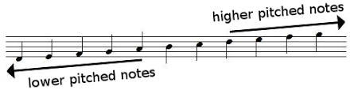
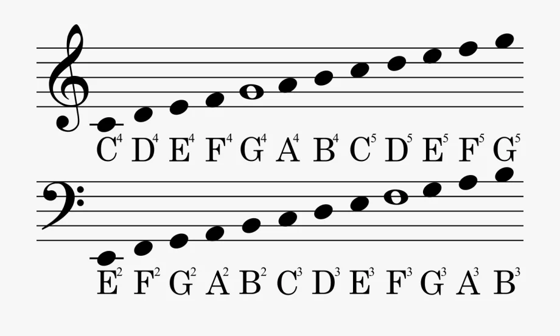
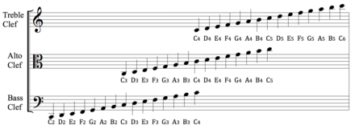
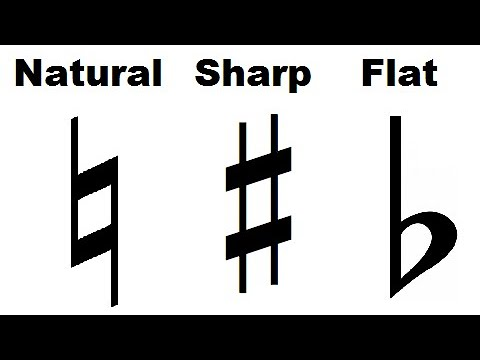
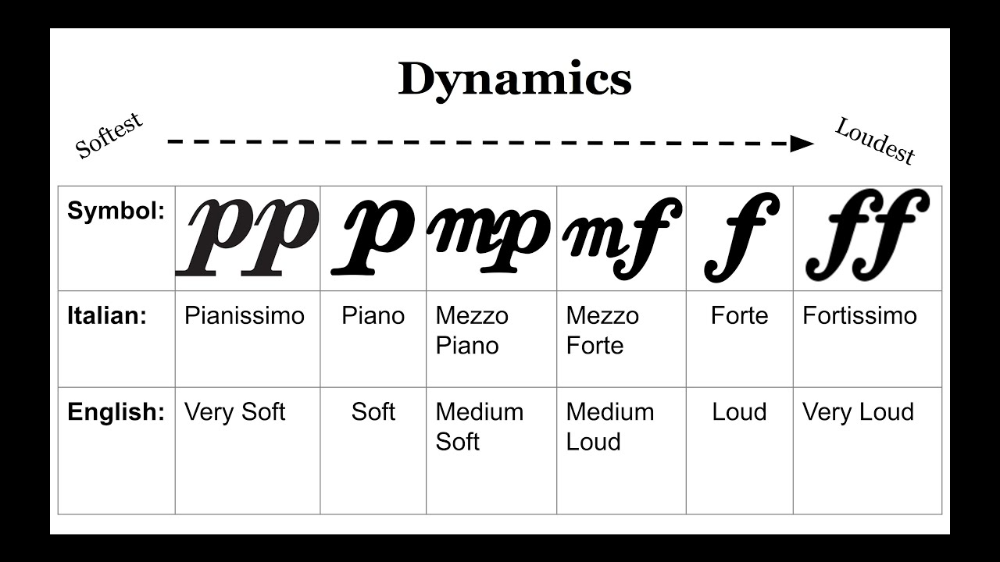

The staff is the horizontal lines and places between on the lines on sheet music which contain the range of notes to play. The notes can also range below and above the lines, with notes gaining lines on them as they do. There is technically no end to how high or low a note can be on a staff but usually the more displaced from the staff the more uncommon the note is.
Notes in different pitches have names to associate the pitch to them. The names of the notes are in alphabetical rising order of A-G, before looping back to either A or G.The reason for specifically 7 note names is because even though notes with the same name may have the same pitch, they are technically the same note, just in what’s called a different “octave”, or set of eight notes. What this technically means is that you can play any song with the same notes but in a different octave, and the song will sound the same but either lower or higher, which doesn’t work when maybe changing every note up by three. There are some methods to memorizing the note names, with my favorite being that every note between the lines on the top staff spells out FACE.
Clefs are simpler than they seem, being there just ot indicate what range of notes to play. This is to indicate what instruments/voices can play/sing the part of a piece. It can also be used for instruments like piano and xylophone to know how far down or up a note is. A warning: the note names on the staff are not the same on each clef, as they are displaced from one another.
Accidentals are used to indicate when a note is a half-step lower or higher than its original note. These are called flats and sharps, respectively. If an accidental is placed on a note, it also indicates any notes that are the same within that measure have that accidental as well. Because you can use flats and sharps to indicate the exact same note, there typically isn’t both flats and sharps in the same piece. There is also an accidental called a natural which is used to indicate a note that might be flat or sharp is now back to its original note. Accidentals can be placed in front of a clef to indicate that every one of those notes are either flat or sharp, unless natural. When this happens, it determines the song’s key. Lastly, not every note can have a flat or sharp, it just doesn’t work.
The dynamics is another word for how loud something is played. Letters underneath the staff will indicate the dynamic marking at that point and onward until it is changed by another dynamic marking. These markings are shown below. There are also crescendos and decrescendos which can extend through many notes that show an increase or decrease in dynamic marking over time. interpreted versions can be written as either cresc. or dim. under the staff as well.
